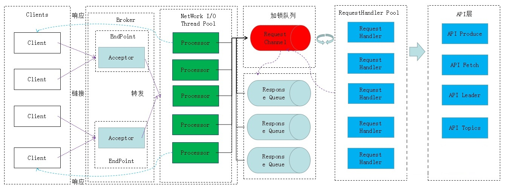

Kafka Broker基于Reactor模式，通过I/O多路复用来完成请求的处理，所以具有极高的吞吐量。关于I/O多路复用，我在其它的专栏里反复讲解过多次了。本章，我再来针对Kafka讲解下它是如何实现多路复用的。
一、工作流程
每个Kafka Broker上都有一个Acceptor线程和多个Processor线程：
- Kafka Broker通过Acceptor监听每个新的Socket连接，建立连接成功后，会采用Round Robin的轮询方式，将Socket连接分配给Processor线程；
- Processor线程负责处理这个Socket连接，每一个Processor都有一个Selector，可以非阻塞的处理多个客户端的读写请求，包括读取数据和将响应返回给对应Client，但是Processor本身不处理具体的业务逻辑；
- 所有Processor都会把请求放入一个Broker全局唯一的请求队列，默认大小是500，可以通过
queued.max.requests参数设置；
- 接着，有一个KafkaRequestHandler线程池负责不停的从队列中获取请求来处理，这个线程池大小默认是8个，可通过
num.io.threads参数控制，处理完请求后的响应，会放入每个Processor自己的响应队列ResponseQueue里；
- 最后，Processor会监听自己的响应队列，把响应拿出来通过Socket连接返回给客户端。
整个流程如下图：

通过参数num.network.threads可以设置processor线程的数量，默认值是3。